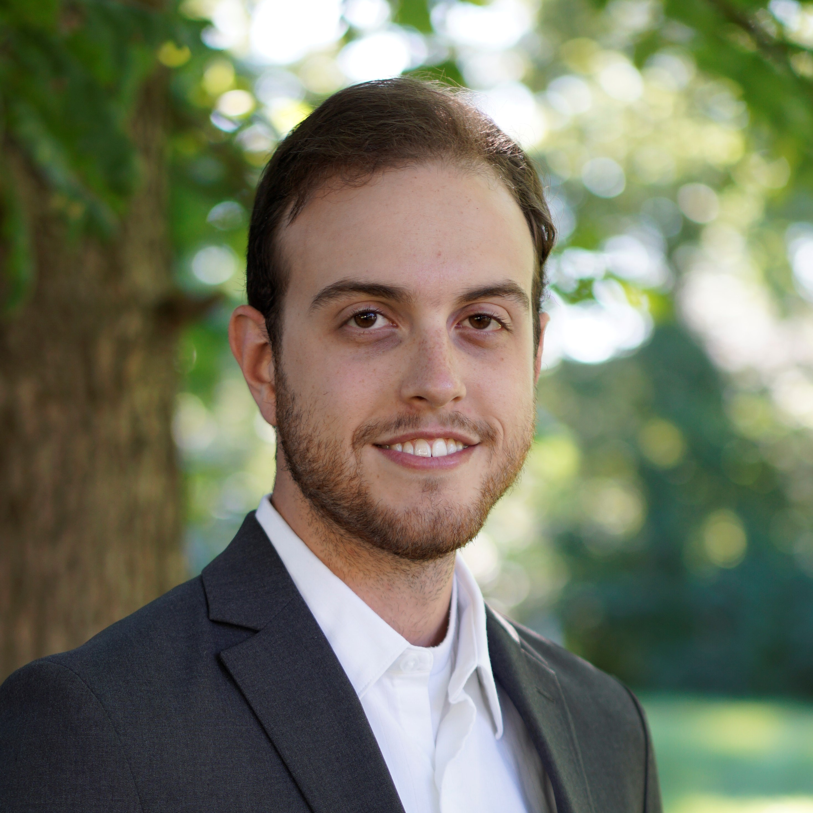

About Me

My name is Jacob Voshage, and I am currently looking for a job in electrical circuit design. I am a (soon to be) recent graduate with bachelor’s degrees in Electrical Engineering and Computer Engineering. I have worked on many related projects in the past and have been involved in many robotics clubs where I have worked alongside others to complete the work on time.
Resume
Timeline
Graduation from University of Missouri-Columbia
December 2020
- Bachelor of Science, Electrical Engineering
- Bachelor of Science, Computer Engineering
- Minor in Mathematics
- Minor in Computer Science
- GPA (current): 3.52/4.00
Research and Development Intern
Plasmadent Inc., Columbia MO
June 2020 - August 2020
- Designed and ran tests to verify the functionality, stability and durability of new developed software and hardware.
- Worked with other members of the engineering team to solve problems
Design Certification Internship
Garmin International, Olathe KS
May 2019 - August 2019
- Created automated testing scripts written in python to ensure designs work as intended in all possible input conditions.
- Determine how designs operate in different environmental conditions.
- Assisted updates to trace matrix reports.
Student's Underwater Robotics Foundation (SURF)
University of Missouri, Columbia MO
February 2018 - Current
SURF is a university club that builds an autonomous submarine for the RoboSub competition. Responsibilities:
- Help design the electrical system for the submarine.
- Guide new members of the team and help keep the electrical team on track to read deadlines.
- Participate in meetings and collaborate with other students.
Graduate from Eureka High School
Eureka High School, Eureka MO
August 2012 - May 2016
Start working at Culvers
Eureka MO
June 2015 - January 2019
High School FIRST Robotics Team
Eureka High School, Eureka MO
September 2012 - May 2016
- Became Team Captain senior year of high school.
- Led and organized a team of 15 by running meetings and ensuring the team met their goals.
- The team qualified for state competition all 4 years I was on the team.